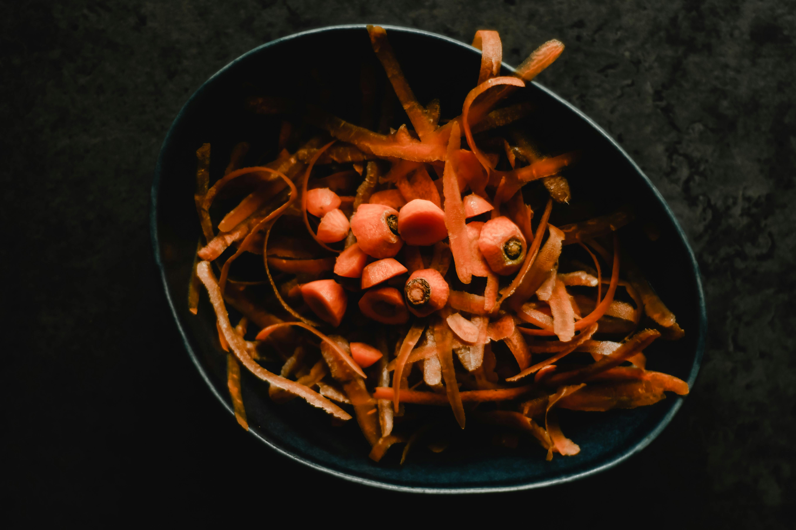
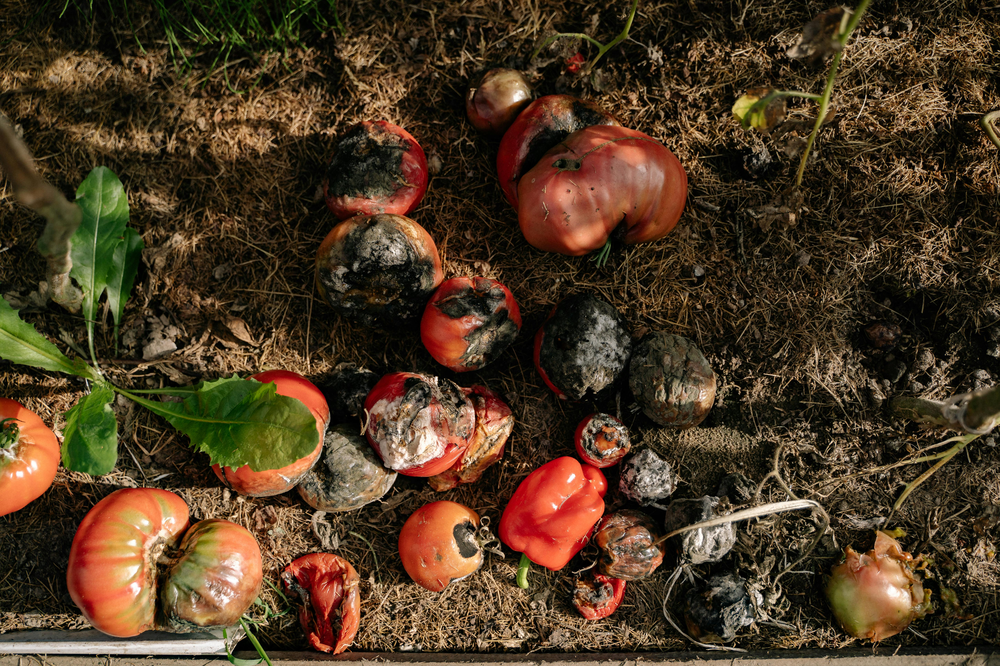

Compostaje en Casa
Transforma tus residuos orgánicos en abono nutritivo para tu huerta

¿Qué puede compostarse?
Materiales verdes (nitrógeno)
- Restos de frutas y verduras.
- Cáscaras de huevo.
- Bolsa de té y café molido.
- Hierbas frescas.
Materiales marrones (carbono)
- Hojas secas.
- Cartón sin tintas.
- Papel periódico.
- Ramas pequeñas.

Métodos para hacer compost
Compostera cerrada
Ideal para espacios pequeños. Usa un contenedor con tapa y agujeros para aireación.
Montón al aire libre
Para jardines grandes. Apila los materiales directamente en el suelo en un rincón sombreado.
Vermicompostaje
Usa lombrices rojas para acelerar el proceso. Perfecto para interiores.

Consejos para éxito seguro
- Alterna capas de materiales verdes y marrones.
- Mantén la humedad de una esponja escurrida.
- Remueve cada 2 semanas para oxigenar.
- Evita carnes, lácteos y aceites.
- El compost listo huele a tierra fresca.
Tiempo de descomposición.
2-6 meses dependiendo del método y condiciones.